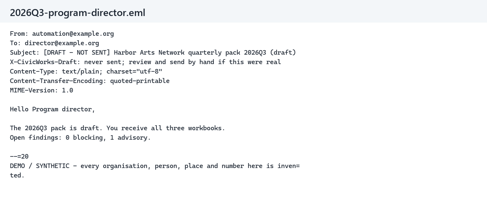

Regional Programs Analytics
Quarterly Excel reports that refuse approval while the data is incomplete, and freeze once approved.
Sixteen art studios each send a report card every three months: how many people came, how many classes ran, complaints, incidents. Someone has to combine them into reports for the director and the board. If one studio forgets to send theirs, its whole region looks like it collapsed. If a studio's numbers do not add up, or someone sends last quarter's card by mistake, or sends a corrected card without saying the old one is wrong, the report is quietly wrong. This pipeline catches each of those, builds the Excel reports anyway as drafts, and only lets the director approve when everything is in and adds up.
The flow, step by step
See it work
Regional reads one CSV per venue per quarter, takes the highest version from each venue, rejects files for the wrong quarter, and checks that every active venue reported and that category attendance adds up to the reported total. It compares like-for-like with last quarter - only venues that reported in both - and flags swings over 40% for commentary. It builds three Excel workbooks whose totals are live SUM and SUMIFS formulas, with a chart, a review pack and draft emails that are never sent. Approval copies the workbooks read-only into a versioned folder with the hashes of every input; approving again changes nothing, and a changed input after approval is caught.
Narrated, replayed from a real run (1.6 s of computing).
Step through the run, scene by scenePredict each scene, then reveal what the real run printed and which rows changed
Experiment with it
The safeguard switch is in the flow above. These go further: change the data, or ask its database a question.
Break the data on purpose (2)Change one thing in the input and see only what the pipeline did differently
A venue's total stops adding up
In Eastmere venue HV-EM01's quarter-3 file, the attendance total is changed to 1400 while its parts still add up to 1309.
A venue never sends its quarter-3 file
HV-EM01's quarter-3 file is deleted before the pipeline reads the inbox.
Query the data with SQLThe pipeline's real database opens in your browser, with example questions
The real database a run of this pipeline left behind (regional.sqlite, 84 KB), opened in your browser - nothing to install, nothing sent anywhere. Each example teaches one SQL idea; hover it to see which.
For the detail
Why it is built this way5 design decisions and what was chosen instead
Compare only venues present in both quarters
instead of: Comparing region totals as they standA venue that has not reported yet would look like a huge drop. That is a missing contributor, which is already flagged; it should not also look like a real change.
Live formulas in the workbook
instead of: Pasting computed numbersA reader can click any total and see exactly which venue rows it adds up.
One accepted submission per venue enforced by the database
instead of: Trusting the code to pick oneA partial unique index makes double counting impossible even if the code had a bug.
Build drafts even when blocked
instead of: Producing nothingPeople can see the state of the quarter and what is missing while approval waits.
Record input hashes at approval
instead of: Only saving the outputsIf someone edits an approved quarter's file later, the next run notices it no longer matches.
What goes wrong, and what happens4 situations
| situation | what the pipeline does |
|---|---|
| A venue never sends its file | missing_contributor blocks approval; the venue shows NO SUBMISSION in the draft. |
| Category attendance does not add up to the reported total | totals_reconcile blocks, naming the venue and both numbers. |
| Last quarter's file lands in this quarter's folder | Rejected as wrong_period; the venue then counts as missing. |
| Approve is run twice | ALREADY APPROVED; nothing is replaced. |
The data modelTables, keys and links, read from the project's own migrations
Blue marks a primary key; amber arrows are foreign keys - links the database itself enforces.
region
- region_code text pk
- label text
- unique (label)
venue
- venue_id text pk
- name text
- region_code text → region.region_code
- tier text
- active integer
- unique (name)
quarter
- quarter_id text pk
- year integer
- number integer
- unique (year, number)
submission
- submission_id integer pk
- venue_id text → venue.venue_id
- quarter_id text → quarter.quarter_id
- version integer
- file_name text
- file_sha256 text
- status text
- reason text
- unique (venue_id, quarter_id)
- unique (venue_id, quarter_id, version, file_sha256)
measure
- measure_id integer pk
- submission_id integer → submission.submission_id
- metric_code text
- category text
- amount integer
report_release
- report_id integer pk
- quarter_id text → quarter.quarter_id
- version integer
- approved_by text
- approved_at text
- inputs_json text
- outputs_json text
- unique (quarter_id, version)
What it producedReal outputs from the recorded run: PDFs, Excel, Word, JSON



Questions it answers3 questions, a short answer and a deeper one
In shortSo a late report does not look like attendance crashed.
In depthLike-for-like intersection of venue sets before computing change; coverage gaps are reported separately.
In shortOnly the newest version counts, and the database itself refuses a second accepted file for the same venue.
In depthHighest _vN wins; older rows status superseded; partial unique index on (venue_id, quarter_id) WHERE status='accepted'.
In shortSo anyone can click a total and see what it adds up.
In depthSUM and SUMIFS over the By Venue sheet; traceable and auditable inside Excel.
Run it yourselfOne command sets everything up
python start.py # sets up and opens the CivicWorks Lab cd regional-programs-analytics && python -m regional demo # or just this demo python -m pytest # its 11 tests